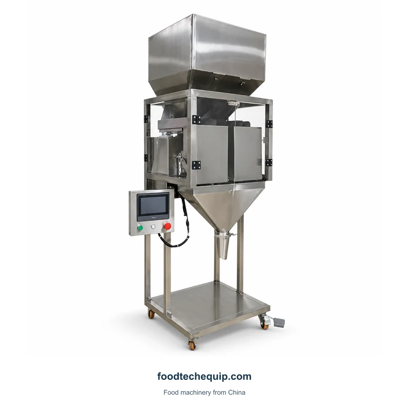
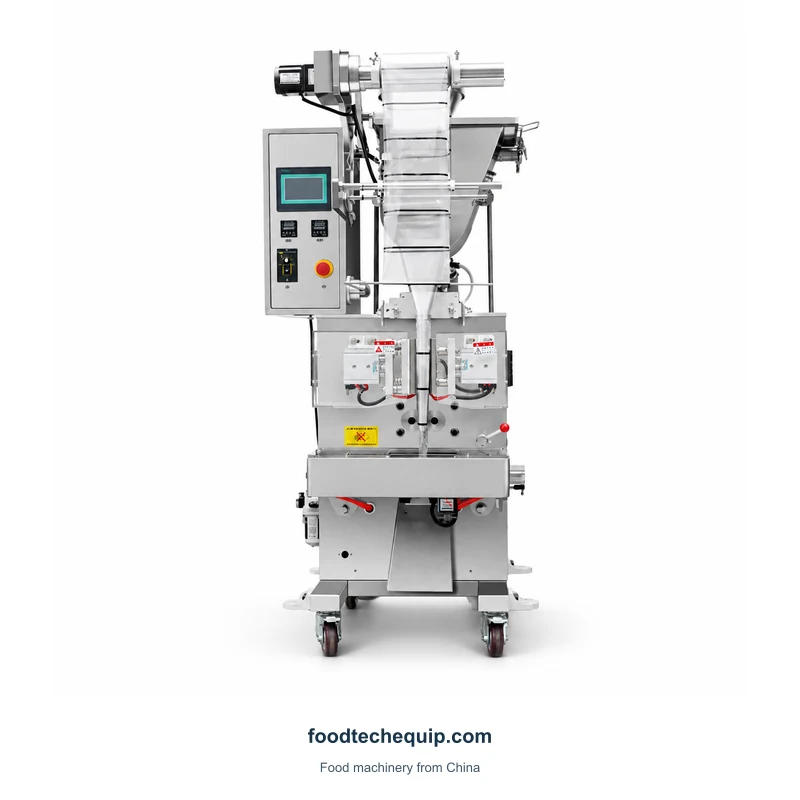
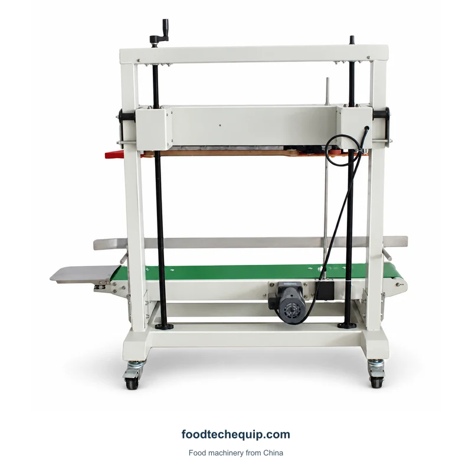
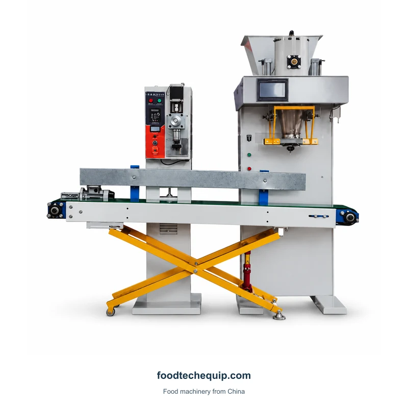
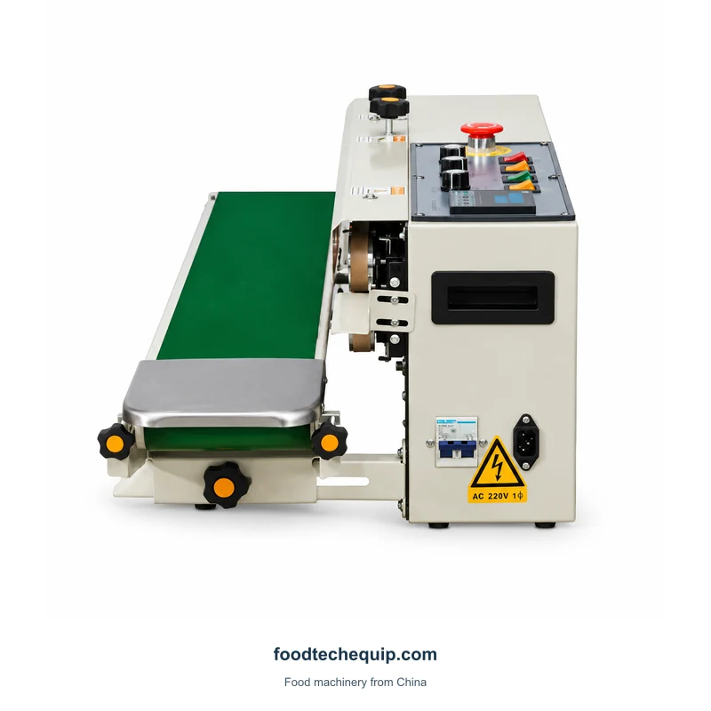
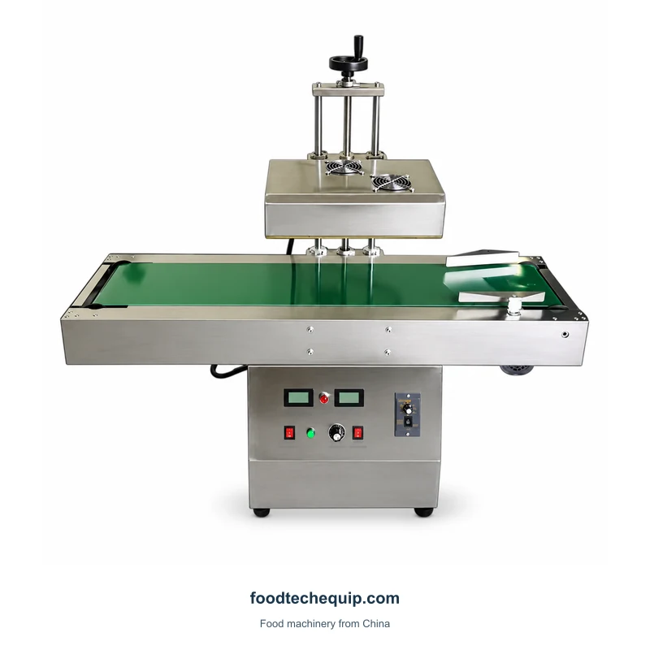
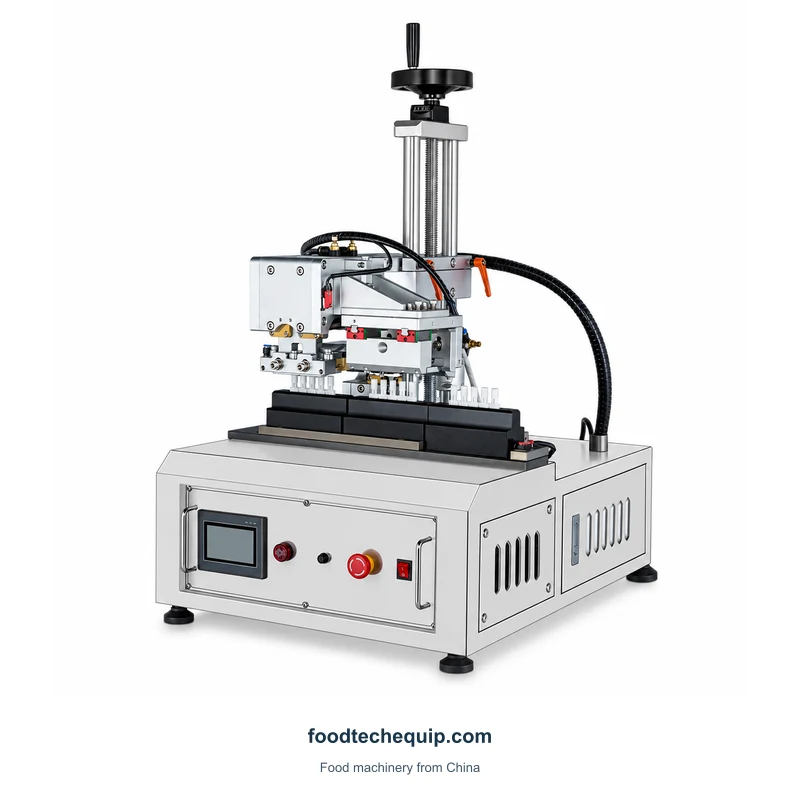
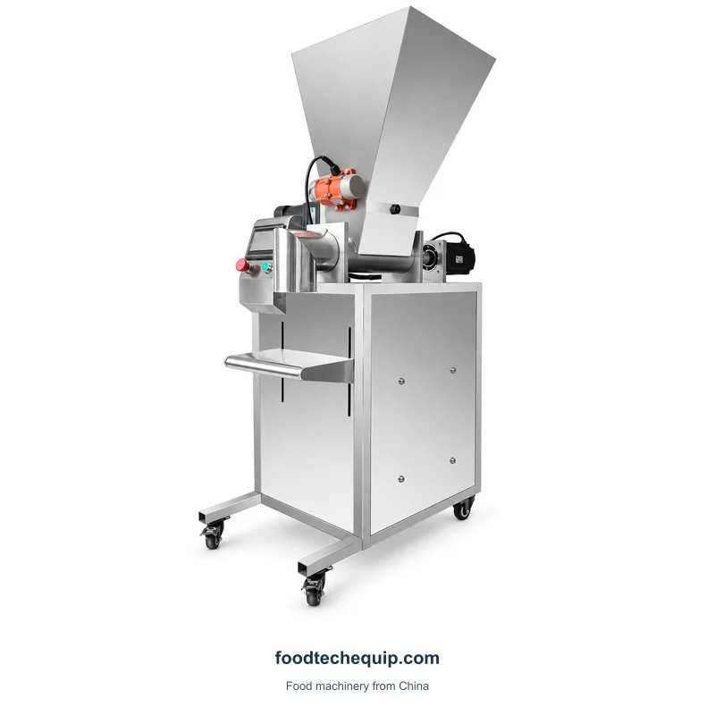

FTE 카탈로그
장비 카탈로그
19개 분류의 115개 제품을 장비명, 모델 또는 사양으로 검색할 수 있습니다.






봉투 실링
수직형 연속식 밴드 실링기 — FR-1100V·FRD-1200V
봉투를 받치는 컨베이어가 있는 수직형 연속식 밴드 실링기입니다. FR-1100V와 FRD-1200V 구성이 있습니다.
장비 보기











정량 공급 설비
입상 원료용 중량 계량·정량 공급기 — 5000F 및 관련 모델
5000F, 2500F, 1500F, F3000 구성이 있는 호퍼 공급식 입상 원료 계량·정량 공급기입니다.
장비 보기





진공 포장
외부 흡입식 진공 포장기 — QDZ-600F / VS600
수직형 외부 흡입식 진공 포장기입니다. 견적 문의 전에 QDZ-600F와 VS600의 전기 사양을 비교해 주세요.
장비 보기


유리병 진공 캡핑
유리병 진공 캡핑기 2·4스테이션형(2스테이션 0.5 kW)
정격 전압 220 V의 유리병 진공 캡핑기입니다. 정격 전력은 2스테이션 0.5 kW, 4스테이션 0.9 kW입니다.
장비 보기


유리병 진공 캡핑
유리병 진공 캡핑기 2·4스테이션형(2스테이션 1.2 kW)
2·4스테이션형 유리병 진공 캡핑기입니다. 2스테이션의 정격 전력은 1.2 kW, 정격 전압은 220 V입니다.
장비 보기

 장비 일러스트 레이 션
장비 일러스트 레이 션
일치하는 장비가 없습니다
다른 키워드를 시도하거나 필터를 지우십시오.